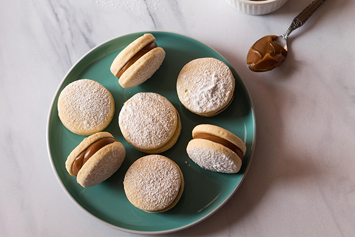

Alfajores
These are sweet, shortbread-style cookies. Alfajores (alfajor, singular) are a popular Latin American treat made of two soft, crumbly cookies filled with a creamy dulce de leche spread. This easy recipe is sure to become a fan favorite.
Ingredients
- ¾ cup unsalted butter, at room temperature
- ¾ cup sugar
- 1 egg, at room temperature
- 1 teaspoon vanilla extract
- ¼ teaspoon almonds extract
- 2 cups all-purpose flour
- ½ teaspoon baking powder
- ¼ salt
- 2 cup pastry dulce de leche, the thick type
Instructions
- In a bowl, beat ¾ cup unsalted butter with ¾ cup sugar just until incorporated.
- Add 1 egg, 1 teaspoon vanilla extract and ¼ teaspoon almond extract and beat for 1 minute.
- In 2 or 3 parts, add sifted 2 cups all-purpose flour, ½ teaspoon baking powder and ¼ teaspoon salt. You can sift them before or have the ingredients measured and sift them directly over the butter mixture (my choice). It will be a soft but not sticky dough.
- Wrap it and chill it for several hours or overnight. It can be in the refrigerator for 2-3 days or frozen for a few weeks (defrost in the refrigerator the day before).
- When you are ready to bake the cookies, preheat the oven to 350° F.
- Have baking sheets ready; no need to butter or line them with parchment paper, but you can.
- Roll the dough in 2 parts and leave the unused piece covered, in the refrigerator. You can use two large pieces of parchment paper or a lightly floured surface to roll the dough.
- I put the dough in the middle and roll it between the pieces of paper. The dough is cold but does not crack when stretched.
- Chill it again until cold, and use a round cookie cutter to cut cookies. Dip the cutter's edge in flour and shake the excess before cutting (prevents the dough from sticking to the cutter).
- Place them on the cookie sheet and bake for about 12 to 15 minutes, until they are dry and just beginning to color. It depends a lot on the thickness of the dough.
- Let them cool completely on a metal cooling rack.
- Fill half the cookies with a thick layer of dulce de leche. I like it to be as thick as the cookie.
- Dust the other half of the cookies with powdered sugar before placing them on top of the filling and pressing lightly to assemble the alfajores.
- Eat them and be happy. ♥